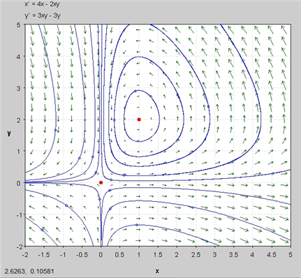
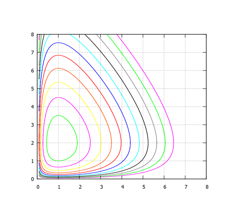
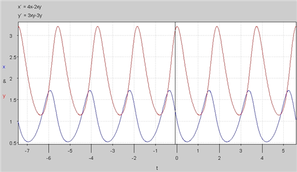
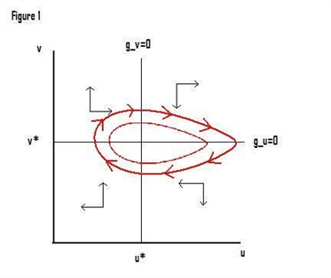
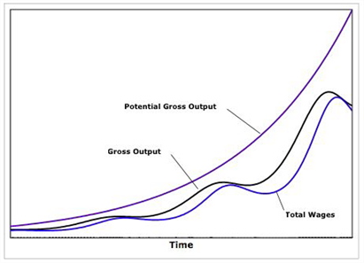

두 동물 종이 상호의존할 수 있는 대표적 경우는 한 종(피식자)이 다른 종(포식자)의 먹이가 되는 관계이다. 이를 포식자-피식자 모형(predator-prey model)이라고 한다.
It is based on linear per capita growth rates
(Prey)
\frac{dx}{dt} \bigg /x = b−py , (b, p > 0)
(Predators)
{\frac{dy}{dt}} \bigg / y = rx−d , (d, r > 0)
ㅇ 매개변수 b는 포식자 y와의 상호작용이 없을 때 피식자 x의 성장률이다. 포식작용이 커질수록 피식자의 1인당 성장률은 감소하며 음수가 될 수도 있다. 포식자가 없다면(y=0) 피식자 개체군은 지수적으로 증가하고, 반대로 피식자가 없다면(x=0) 포식자 개체군은 먹이 부족으로 지수적으로 감소한다.
ㅇ 매개변수 p는 포식이 피식자 성장률에 미치는 영향을 나타낸다.\frac{dx}{dt} \bigg /x
ㅇ 매개변수 d는 피식자 x와의 상호작용이 없을 때 포식자 y의 사망률(또는 유출률)을 나타낸다.
ㅇ 항 rx는 피식자 개체군의 크기에 대응하여 포식자 개체군이 증가하는 순증가율을 나타낸다.
(풀이)
\frac{dx}{dt} = (b−py)x
\frac{dy}{dt} = (rx−d)y
임계점은 \frac{dx}{dt} = \frac{dy}{dt} = 0에서 결정되므로
(b−py)x = 0
(rx−d)y = 0
이 두 연립방정식의 해는 아래 ①, ②를 동시에 만족시켜야 한다.
∴ x = 0 or b−py = 0 ...........①
y = 0 or rx−d = 0 ...........②
파란선과 빨간선이 만나는 점이 임계점이므로 임계점은 (0, 0), (\frac{\mathbf{d}}{\mathbf{r}}, \frac{\mathbf{b}}{\mathbf{p}}) 두 개가 된다.
한편 연립미분방정식의 Jacobian은
J = {\begin{pmatrix}b-py & \;-px \\ ry & \;rx-d\end{pmatrix}}
(i) (x, y) = (0, 0)
J = {\begin{pmatrix}b & \;0 \\ 0 & \;-d\end{pmatrix}}
대각행렬이므로 고유치는 b, -d
b > 0, -d < 0 이므로 해는 불안정하고 안장경로를 갖는다.
(0, 0)일 경우 (0, 0)에 안정?
(x, 0)일 경우 x축을 따라 발산 ⇒ predator가 없는 경우이므로 prey는 기하급수적으로 성장
(0, y)일 경우 y축을 따라 0에 수렴 ⇒ prey가 없는 경우이므로 predator는 굶어 죽음
(ii) (x, y) = (\frac{\mathbf{d}}{\mathbf{r}}, \frac{\mathbf{b}}{\mathbf{p}})
J = {\begin{pmatrix}0 & \;-\, \frac{pd}{r} \\ \frac{rb}{p} & \;0\end{pmatrix}}
특성방정식은
\phi ( \lambda )\,=\, \lambda^{2} +bd
∴ \lambda \,=\,\pm i \sqrt {bd}
고유치가 허수이므로 해는 회전한다. 특히 실수부분이 0 이므로 나선형으로 수렴하거나 발산하는 것이 아니라 일정하게 회전한다.
앞의 미분방정식을 정리하여 풀면 다음과 같다.[71]
\frac{dx}{dt} = (b−py)x ............③
\frac{dy}{dt} = (rx−d)y .............④
③÷④ = \frac{dx/dt}{dy/dt} \,=\, \frac{(b-py)x}{(rx-d)y}
⇒ \frac{dx/dt}{x} (rx-d)\,=\, \frac{dy/dt}{y} (b-py)
⇒ r \frac{dx}{dt} -d \frac{1}{x} \frac{dx}{dt} \,=\,b \frac{1}{y} \frac{dy}{dt} -p \frac{dy}{dt}
양변 적분하면
rx-d\,\ln x+C_{1} \,=\,b\,\ln y-py\,+C_{2} , where C_{1} \,,\,C_{2} 는 상수
∴ rx+py-d\,\ln x-b\,\ln y\,=\,C, where C\,=C_{2} \,-C_{1} ..............⑤
any solution (x(t),y(t)) of the system satisfies the identity ⑤
위 항등식의 좌변은 해를 따라 일정한 값을 유지하므로 보존법칙(conservation law)이라고 부른다.
예) \frac{dx}{dt} \,=\,x(4-2y)
\frac{dy}{dt} \,=y(3x-3)\,
(풀이)
임계점은 (0, 0), (1, 2)
한편 연립미분방정식의 Jacobian은
J = {\begin{pmatrix}4-2y & \;-2x \\ 3y & \;3x-3\end{pmatrix}}
(i) (x, y) = (0, 0)
J = {\begin{pmatrix}4 & \;0 \\ 0 & \;-3\end{pmatrix}}
대각행렬이므로 고유치는 4, -3
b > 4, -3 < 0 이므로 해는 불안정하고 안장경로를 갖는다.
(ii) (x, y) = (1, 2)
J = {\begin{pmatrix}0 & \,-\,2 \\ 6 & \;0\end{pmatrix}}
특성방정식은
\phi ( \lambda )\,=\, \lambda^{2} +12
∴ \lambda \,=\,\pm i2 \sqrt {3}
고유치가 허수이므로 해는 회전한다. 특히 실수부분이 0 이므로 나선형으로 수렴하거나 발산하는 것이 아니라 타원형으로 일정하게 회전한다.
(그림)에서는 이해를 돕기 위해 x, y 가 0 이하인 부분도 표시했지만 실제로는 x > 0, y > 0이므로 1/4 분면만 고려하면 된다.

앞의 보존법칙 등식에 대입하면
3x+2y-3\,\ln x-4\,\ln y\,=\,C
이 등고선들은 초기조건에 의해 결정되는 시스템의 해 궤적을 나타낸다. 궤적이 닫힌 곡선이므로 해는 주기적으로 진동한다.
(그림 b)는 C= 5, 6,..., 15 대해 수치분석을 통해 그래프를 그린 것이다.[72] 5가 가장 안쪽이고 15가 가장 바깥쪽이다.
x(t) > 0, y(t) > 0이므로 조개모양의 원들은 결코 x축 또는 y 축과 만나지 않는다.
처음에[73] 포식자가 적어서 prey는 증가하지만 (좌하→우하부분)
prey의 증가는 포식자의 증가를 가져오고(우하→우상부분)
이는 prey의 감소를 야기한다.(우상→좌상부분)
먹이가 되는 prey의 감소는 다시 포식자의 감소를 가져오고(좌상→좌하부분)
포식자의 감소로 prey는 증가한다.(좌하→우하부분)
이와같은 현상이 반복해서 일어나므로 주기적 진동(periodic oscillations)이라 한다.
predator와 prey의 개체수변화를 시간에 따라 표현한 것이 (그림 c)이다.[74] . 포식자(빨간색)가 prey(파란색)보다 약간 지체되서 움직인다.


(풀이끝)
a) Lotka–Volterra 방정식은 이산시간이 아니라 연속시간 모형이라는 점
b) only two species can be accounted
(가정)
\frac{dx}{dt} \bigg / x\,= r \left( 1- \frac{x}{K} \right) -sy ; 피식자 개체군의 성장률
\frac{dy}{dt} \bigg /y\,=(vx-u) ; growth rate of the predator population
x(t) : denote the size of the prey population
y(t) : denote the size of the predator population
K : carrying capacity
포식자가 없으면(Q=0) 피식자 개체군은 로지스틱 모형에 따라 성장한다. 그러나 포식자 개체군이 커질수록 피식자의 성장률은 낮아진다.
피식자가 없으면(P=0) 포식자 개체군은 u의 비율로 감소한다. 반대로 피식자가 많아질수록 포식자의 성장률은 높아진다.
임계점은 \frac{dx}{dt} = \frac{dy}{dt} = 0 에서 결정되므로
\frac{dx}{dt} \,=x \left[ r \left( 1- \frac{x}{K} \right) -sy \right] \,=\,0
\frac{dy}{dt} \,=\,y(vx-u)=\,0
이 두 연립방정식의 해는 아래 ①, ②를 동시에 만족시켜야 한다.
∴ x\,=\,0 or r \left( 1- \frac{x}{K} \right) -sy \,=\,0 ...........①
y\,=\,0 or vx-u=\,0 ......................②
총생산함수
q\,=\,\min (al,\, \frac{k}{\sigma } )
q = 총생산
ℓ = 노동
k = 자본
a = 노동 생산성
σ = 자본/생산물 비율(상수)
이 변수들은 모두 시간의 함수이지만, 표기를 간단히 하기 위해 시간 첨자를 생략하였다.
Harrod–Domar 모형과 달리 자본은 완전히 가동된다고 가정한다.
Hence
al\,=\, \frac{k}{\sigma } \,=\,q
at all times.
The employment rate(v) is given by
v\,=\, \frac{l}{n}
여기서 n은 총노동력이며 β의 비율로 증가한다.
또한 노동생산성 a도 α의 비율로 증가한다고 가정한다.
이 경우 고용률의 증가율은 다음과 같이 주어진다.
g_{v} \,=\, \frac{dv/dt}{v} \,=\,g_{l} \,-\, \beta
고용자 수 자체의 증가율은 다음과 같다.
g_{l} \,=\, \frac{dl/dt}{l} \,=\,g_{q} \,-\, \alpha
임금은 다음과 같은 선형화된 필립스곡선 관계에 따라 변한다고 가정한다.
g_{w} \,=\, \frac{dw/dt}{w} \,=\, \rho v\,-\, \gamma
즉 노동시장이 타이트하여 고용률이 이미 높으면 임금 상승 압력이 커지고, 노동시장이 느슨하면 반대가 된다. 이 부분이 이 모형의 이른바 계급투쟁적 성격과 연결되지만, 같은 형태의 필립스곡선은 여러 거시경제모형에서도 사용된다.
산출에서 노동자에게 귀속되는 몫을 u라 하면, 정의상 다음과 같다.
u\,=\, \frac{wl}{q} \,=\, \frac{w}{a}
Hence the growth rate of the workers' share is
g_{u} \,=\, \frac{du/dt}{u} \,=\,g_{w} \,-\, \alpha
노동소득분배율은 임금이 오르면 증가하지만, 생산성 향상으로 같은 산출량을 더 적은 노동으로 생산할 수 있게 되면 감소한다.
마지막으로 자본축적식과 그에 따른 산출 증가율을 설정한다. 자본이 완전히 가동되고 규모수익불변을 가정하므로 자본과 산출은 같은 비율로 성장한다. 노동자는 임금을 모두 소비하고 자본가는 이윤의 일정 비율 s를 저축하며, 자본은 δ의 비율로 감가상각된다고 가정한다.\delta
g_{k} \,=\, \frac{dk/dt}{k} \,=\,g_{q} \,=\,s(1-u) \frac{q}{k} \,-\, \delta
g_{v} \,=\, \frac{dv/dt}{v} \,= \frac{s(1-u)}{\sigma } \,-\,( \delta \,+\, \alpha \,+\, \beta )\,
The two differential equations
g_{v} \,=\, \frac{dv/dt}{v} \,= \frac{s(1-u)}{\sigma } \,-\,( \delta \,+\, \alpha \,+\, \beta )\,
g_{u} \,=\, \frac{du/dt}{u} \,=\,g_{w} \,-\, \alpha \,=\, \rho v\,-\, \gamma \,-\, \alpha
이 두 식이 모형의 핵심 방정식이며 사실상 Lotka–Volterra 방정식과 같은 형태이다.
모형을 명시적으로 풀 수도 있지만 위상도를 이용하면 경제의 궤적을 직관적으로 분석할 수 있다. 위 두 방정식을 0으로 놓으면 각각의 증가율이 0이 되는 u와 v의 값을 구할 수 있다.
\frac{s(1-u)}{\sigma } \,-\,( \delta \,+\, \alpha \,+\, \beta )\,=\,0\,
so
u^{*} \,=\,1- \frac{( \delta + \alpha + \beta ) \sigma }{s}
\, \rho v\,-\, \gamma \,-\, \alpha \,=\,0
so
v^{*} \,=\, \frac{\gamma \,+\, \alpha }{\rho }
이 두 직선은 u와 v가 1을 넘지 않도록 하는 조건과 함께 양의 영역을 네 구역으로 나눈다. 그림의 화살표는 각 구역에서 경제가 움직이는 방향을 나타낸다. 예를 들어 고용은 높고 노동소득분배율은 낮은 북서쪽 영역에서는 고용과 노동소득분배율이 함께 상승한다. u*선을 넘으면 이동 방향이 바뀐다.

아래 그림은 잠재산출(완전고용 산출), 실제산출, 임금이 시간에 따라 어떻게 움직이는지를 보여준다.

Goodwin 모형은 수요나 공급 측의 외생적 충격을 별도로 가정하지 않고도 경제활동의 내생적 변동을 만들어낼 수 있다.
“이 균형상태는 순전히 상상 속의 구성물이다. 변화하는 세계에서는 실제로 실현될 수 없으며, 오늘의 상태뿐 아니라 실현 가능한 어떤 상태와도 다르다.”
動態的 需要-供給 模型(Dynamic demand-supply model)
한 상품의 수요 D(p), 공급 S(p)은 가격 p의 함수이고 D(p) = S(p)인 p*를 시장청산 균형가격이라 한다. p*의 존재 여부는 수요, 공급 곡선이 교차하는가에 달려있다. 만약 가격 p가 균형외의 점일 때 시간이 경과함에 따라 균형가격 p*으로 수렴하는가의 여부는 해의 안정성 문제이다.
(그림)은 균형가격에서 이탈한 가격이 균형가격으로 수렴하는가 여부를 나타낸다.
(그림a)는 균형가격으로 수렴하지만 (그림b)는 균형가격으로 수렴하지 않고 가격이 발산한다.
(가정)
(i) 초과수요는 가격을 상승시키고 초과공급은 가격을 하락시킨다.
D(p) \geq S(p)\; \rightarrow \; \frac{dp}{dt} \, \geq 0
D(p) \leq S(p)\; \rightarrow \; \frac{dp}{dt} \, \leq 0
(ii) 완전경쟁시장 - 가격은 시장에 따라 결정
(iii) 가격만이 결정요소
(iv) 조정과정은 순간적(instataneous)-시간이 걸리지 않음
(일반형)
\frac{d rm}{dt}p(t) = \,h_{i}[f_{i}(p(t))] ,\;i\,=\,1,\,2,\,...,\,n
p(t) : 가격벡터,
f_{i}(p(t)) : i 상품의 초과수요함수
h_{i} : 단조증가 미분가능한 함수
⇒ \frac{d rm}{dt}p(t) = \,h_{i}[D_{i}(p(t))-S_{i}(p(t))]
왈라스 안정성(Walrasian stability) vs 먀샬 안정성(Marshallian stability)[75]
(왈라스 모형)
가격을 조정함으로써 균형에 도달하는 과정. 이 때의 안정을 왈라스 안정성이라 한다.
\frac{d rm}{dt}p(t) = \,a_{i}[D_{i}(p(t))-S_{i}(p(t))] , where \,a_{i}(>0)는 속도조정계수
(마샬 모형)
공급량을 조정함으로써 균형에 도달하는 과정. 이 때의 안정을 마샬 안정성이라 한다.
\frac{d rm}{dt}q(t) = \,b_{i}[P_{i}^{d}(q(t))-P_{i}^{s}(q(t))] , where \,b_{i}(>0)는 속도조정계수
P_{i}^{d}(q) : 소비자가 지불하려는 가격
P_{i}^{s}(q) : 공급자가 요구하는 가격
P_{i}^{d}(q) \geq P_{i}^{s}(q) ⇒ \frac{d rm}{dt}q(t) \geq 0
소비자가 지불하려는 가격이 공급자가 요구하는 가격보다 크다면 공급자는 공급을 늘린다.
P_{i}^{d}(q) \leq P_{i}^{s}(q) ⇒ \frac{d rm}{dt}q(t) \leq 0
소비자가 지불하려는 가격이 공급자가 요구하는 가격보다 작다면 공급자는 공급을 줄인다.
(샤뮤엘슨 모형)
\frac{d rm}{dt}p_{i}(t) = \,a_{i}[f_{i}(p(t))] , where \,a_{i}는 속도조정계수
테일러 전개를 통해 비선형함수를 선형화(linear approximation)를 함
\frac{d rm}{dt}p_{i}(t) = \sum\limits_{j=1}^{n} a_{i} \frac{\partial f_{i}}{\partial p_{j}} [p_{j} (t)- \hat{p}_{j} ] , \;i\,=\,1,\,2,\,...,\,n
선형연립미분방정식을 풀 수 있다.
행렬로 표현
\frac{d rm}{dt}p(t) = A(p)E(p)
where A(p)는 조정속도계수 행렬, E(p)는 초과수요함수 벡터
조정속도계수가 상수인 경우
\frac{d rm}{dt}p(t) = AE(p)
p ' _{1} (t)\;= \,a_{11} E_{1}(p) + \,a_{12} E_{2}(p) + \cdots + \,a_{1n} E_{n}(p)
p ' _{2} (t)\;= \,a_{21} E_{1}(p) + \,a_{22} E_{2}(p) + \cdots + \,a_{2n} E_{n}(p)
\vdots
p ' _{n} (t)\;= \,a_{n1} E_{1}(p) + \,a_{n2} E_{2}(p) + \cdots + \,a_{nn} E_{n}(p)
where p_{i} (t)는 i 상품의 가격, a_{ij}는 속도조정계수, E_{i}(p)는 초과수요함수
한 시장의 가격조정 속도는 다른 시장의 불균형 상태에도 영향을 받을 수 있다. 즉 어떤 시장에서 수요가 공급보다 많더라도 다른 시장의 불균형 때문에 그 시장의 가격이 하락하는 경우가 있을 수 있다.
Walras는 이런 가능성을 대체로 배제하고, 특정 시장의 가격변화 방향은 그 시장 자체의 초과수요 부호에 의해서만 결정된다는 기본 원리를 상정했다.
즉 한 시장의 조정은 자기 시장의 초과수요에만 의존하며 다른 시장의 균형·불균형 여부에는 의존하지 않는다고 본다.
\frac{d rm}{dt}p(t) = AdE(p)
= {\begin{pmatrix}a_{11} & 0 & \cdots & 0 \\ 0 & a_{22} & \cdots & 0 \\ \vdots & \vdots & \ddots & \vdots \\ 0 & 0 & \cdots & a_{nn}\end{pmatrix}}{\begin{pmatrix}E_{1} \\ E_{2} \\ \vdots \\ E_{n}\end{pmatrix}}
이론이 예측하는 ‘확대되는 궤도(expanding orbits)’라는 불안정 현상이 실제 시장에서도 나타날 수 있다. 가격은 균형가격 주위를 돌면서 바깥쪽으로 나선형 이동을 하며, 이러한 조정원리는 하나의 내부균형으로 수렴을 보장하는 조건과 다르다.[76]
Lotka-Volterra Model 이라고도 함. In 1926, the famous Italian mathematician Vito Volterra proposed a differential equation model to explain the observed increase in predator fish (and corresponding decrease in prey fish) in the Adriatic Sea during World War I. At the same time in the United States, the equations studied by Volterra were derived independently by Alfred Lotka (1925) to describe a hypothetical chemical reaction in which the chemical concentrations oscillate.
http://www.scholarpedia.org/article/Predator-prey_model
↩Unfortunately, there is no decent way to express analytic solutions to the Lotka-Volterra
equations in terms of elementary functions
↩http://math.rice.edu/~dfield/dfpp.html 이용
↩좌하부분에서 시작한다고 가정. 어느 부분에서 시작해도 진행상황은 같다.
↩시간이 음수로 표현되어 있지만 무시
↩Takayama, mathmatical economics.
↩http://www.kellogg.northwestern.edu/faculty/rogers_b/personal/assets/pricedyn.pdf
↩← Bass 확산과 종족경쟁 · 절별 목차 · 초과수요와 가격동학 →